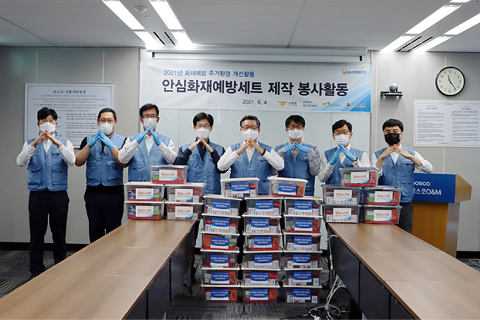
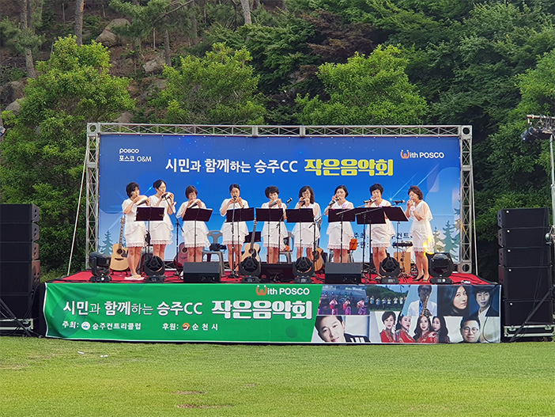
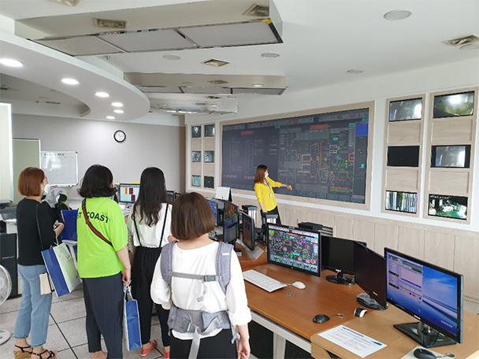
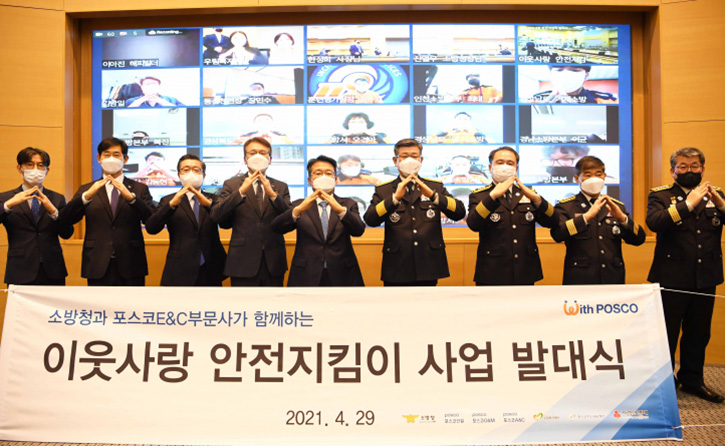
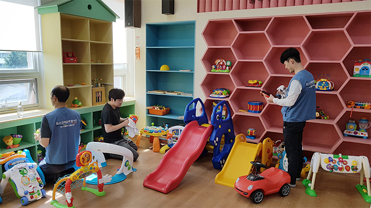

사회공헌 비전
더 나은 세상을
만들어가기 위한 우리의 同行
포스코 엠텍은 지속 가능한 내일을 함께 만들어가기 위해 생태계 조성을 위해 환경 꿈나무 육성 교육 및 다양한 활동에 앞장서고 있습니다.
미래 세대의 성장가능성을 발굴하여 지원하고 심리적 · 정서적인 안전 제공 및 취약계층 교육환경 제공에 힘쓰고 있습니다.
임직원의 자발적인 참여를 통한 선한 영향력 확산 및 지역사회와 소통하며 전문가들과의 파트너쉽을 통한 사회문제 발굴하고 있습니다.
봉사·후원 활동
-
- 재능기부 봉사활동 (가치봉사 동호회)
- 임직원이 보유한 재능이나 관심사와 연계하여 사회이슈 해결을 위해 활동하는 봉사단운영
-
- 전사 테마 봉사활동
- 글로벌 모범시민위크 등 전임직원이 공통의 주제와 목표를 가지고 함께 참여하는 봉사활동 전개
-
- 부서단위 / 개인 봉사활동
- 부서단위 혹은 개인이 지역사회의 어려운 이웃을 위해 자발적으로 참여 하는봉사 활동 장려
-
- 1% 나눔기금참여
- 매월 급여의 1%를 기부함으로써 지역의 사회공헌 활동에 기여하는 자발적 기부 후원활동 장려
주요 활동내역
-

- 비대면 공헌사업
- 언택트 문화 및 시대에 맞춰 어플(app)을 활용한 걸음 기부, 안전, 화재예방 키트 제작 등 패러다임 변화에 발맞춘 비대면 공헌 활동을 실시하고 있습니다.
-

- 지역사회 상생활동
- 지역사회와 상생하여 동반성장할 수 있도록 문화공간 조성, 골프꿈나무 지원 등으로 골프산업 인식개선과 지역주민들에게 다양한 기회를 제공하고 있습니다.
-

- 환경체험스쿨
- 올바른 자원 재활용 인식을 전파하는 활동으로써, 분리수거, 재활용 체험 교육, 견학 등으로 환경기초시설의 중요성과 자원순환 이해도를 확산시키는 활동입니다.
-

- 민관협력사업
- 포스코 그룹사, 정부/공공기관, 비영리기관 등 민관 협업을 통한 사회공헌 사업을 추진하며 사회적 임팩트 확산을 제고하고 있습니다.
-

- 우리집을 부탁해
- 시설관리 전문 역량을 활용해 시설물 안전진단과 보수 작업을 지원하는 지역사회에 재능기부하는 사업입니다.
기부금 현황
| 구분 | 기부금(원) |
|---|---|
| 2018 | 69,643,580 |
| 2019 | 159,143,391 |
| 2020 | 180,274,324 |
| 2021 | 165,563,580 |